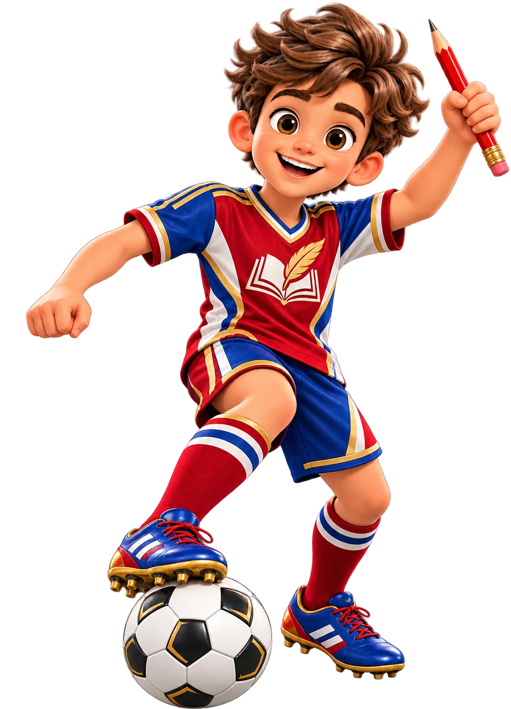
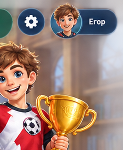

Русский язык · 5 класс 157 тем · 12 смысловых блоков · тест после каждого блока
Тренер Слова

Блок 1. Старт и повторение начальной школы 001 Богатство и выразительность русского языкаУрок + диктант ⚽ 0 / 9 002 Лингвистика как наука о языке 🔒 003 Звуки и буквы. Правописание гласных и согласных в корнях слов 🔒 004 Буквы И, У, А после шипящих 🔒 005 Части речи 🔒 006 Глагол 🔒 007 Имя существительное 🔒 008 Имя прилагательное 🔒 009 Местоимение 🔒 010 Словосочетание. Предложение 🔒 011 Пунктуация 🔒 📝 Тест по блоку 1 Старт и повторение начальной школы · 15–20 вопросов уровня выше среднего 🔒 Блок 2. Язык, речь, текст и стили 012 Язык и общение 🔒 013 Виды речи. Речь устная и письменная 🔒 014 Монолог 🔒 015 Прямая речь 🔒 016 Диалог. Полилог 🔒 017 Читаем по-разному 🔒 018 Слушание (аудирование) 🔒 019 Что мы знаем о тексте 🔒 020 Тема текста 🔒 021 Главная мысль (идея) текста 🔒 022 Абзац 🔒 023 Связь предложений в тексте 🔒 024 Повествование как функционально-смысловой тип речи 🔒 025 Рассказ как разновидность текста 🔒 026 Рассказ на основе услышанного 🔒 027 Описание как функционально-смысловой тип речи. Описание предмета 🔒 028 Рассуждение как функционально-смысловой тип речи 🔒 029 Доказательства в рассуждении 🔒 030 Функциональные разновидности языка. Разговорная речь. Язык художественной литературы 🔒 031 Функциональные стили 🔒 📝 Тест по блоку 2 Язык, речь, текст и стили · 15–20 вопросов уровня выше среднего 🔒 Блок 3. Фонетика, графика и орфоэпия 032 Фонетика как раздел лингвистики 🔒 033 Гласные звуки 🔒 034 Согласные звуки 🔒 035 Изменение звуков в потоке речи 🔒 036 Согласные твёрдые и мягкие 🔒 037 Согласные звонкие и глухие 🔒 038 Графика 🔒 039 Алфавит 🔒 040 Обозначение мягкости согласных с помощью мягкого знака 🔒 041 Двойная роль букв Е, Ё, Ю, Я 🔒 042 Слог. Ударение. Орфоэпия 🔒 043 Фонетический анализ слова 🔒 044 Интонация, её функции 🔒 📝 Тест по блоку 3 Фонетика, графика и орфоэпия · 15–20 вопросов уровня выше среднего 🔒 Блок 4. Орфография и лексикология 045 Орфография. Орфограмма 🔒 046 Раздельное написание предлогов с другими словами 🔒 047 Разделительные Ъ и Ь 🔒 048 Слово и его лексическое значение 🔒 049 Однозначные и многозначные слова 🔒 050 Прямое и переносное значения слов 🔒 051 Омонимы 🔒 052 Синонимы 🔒 053 Антонимы 🔒 054 Паронимы 🔒 055 Словари 🔒 056 Основные способы толкования слов 🔒 057 Лексический анализ слова 🔒 📝 Тест по блоку 4 Орфография и лексикология · 15–20 вопросов уровня выше среднего 🔒 Блок 5. Морфемика и правописание морфем 058 Морфема — минимальная значимая единица языка 🔒 059 Изменение и образование слов 🔒 060 Окончание 🔒 061 Основа слова 🔒 062 Корень слова 🔒 063 Суффикс 🔒 064 Приставка 🔒 065 Чередование звуков 🔒 066 Беглые гласные 🔒 067 Варианты морфем 🔒 068 Морфемный анализ слова 🔒 069 Правописание корней с безударными проверяемыми и непроверяемыми гласными 🔒 070 Правописание корней с проверяемыми и непроверяемыми согласными 🔒 071 Правописание корней с непроизносимыми согласными 🔒 072 Буквы Ё — О после шипящих в корне 🔒 073 Правописание гласных и согласных в приставках 🔒 074 Буквы З и С на конце приставок 🔒 075 Буквы Ы — И после Ц 🔒 076 Буквы Ы — И после приставок 🔒 📝 Тест по блоку 5 Морфемика и правописание морфем · 15–20 вопросов уровня выше среднего 🔒 Блок 6. Морфология и имя существительное — основы 077 Морфология как раздел лингвистики 🔒 078 Имя существительное как часть речи 🔒 079 Имена существительные одушевлённые и неодушевлённые 🔒 080 Имена существительные собственные и нарицательные 🔒 081 Род имён существительных 🔒 082 Имена существительные, которые имеют форму только множественного числа 🔒 083 Имена существительные, которые имеют форму только единственного числа 🔒 084 Типы склонения имён существительных 🔒 085 Падеж имён существительных 🔒 086 Правописание безударных окончаний имён существительных в единственном числе 🔒 087 Множественное число имён существительных 🔒 088 Правописание О — Е после шипящих и Ц в окончаниях существительных 🔒 📝 Тест по блоку 6 Морфология и имя существительное — основы · 15–20 вопросов уровня выше среднего 🔒 Блок 7. Имя существительное — сложные случаи и чередования 089 Разносклоняемые имена существительные 🔒 090 Буква Е в суффиксе -ЕН- существительных на -МЯ 🔒 091 Несклоняемые имена существительные 🔒 092 Род несклоняемых имён существительных 🔒 093 Имена существительные общего рода 🔒 094 Морфологический анализ имени существительного 🔒 095 НЕ с существительными 🔒 096 Буквы Ч и Щ в суффиксе -ЧИК- — -ЩИК- 🔒 097 Гласные в суффиксах имён существительных -ЕК- — -ИК- (-ЧИК-) 🔒 098 Гласные О — Е после шипящих в суффиксах существительных 🔒 099 Буквы А // О в корне -ЛАГ- — -ЛОЖ- 🔒 100 Буквы А // О в корне -ГАР- — -ГОР- 🔒 101 Буквы А // О в корне -ЗАР- — -ЗОР- 🔒 102 Буквы А // О в корне -РАСТ- — -РАЩ- — -РОС- 🔒 103 Буквы А // О в корнях -КЛАН- — -КЛОН-, -СКАК- — -СКОЧ- 🔒 📝 Тест по блоку 7 Имя существительное — сложные случаи и чередования · 15–20 вопросов уровня выше среднего 🔒 Блок 8. Имя прилагательное 104 Имя прилагательное как часть речи 🔒 105 Правописание безударных окончаний имён прилагательных. Гласные после шипящих в окончаниях 🔒 106 Описание животного 🔒 107 Прилагательные полные и краткие 🔒 108 НЕ с прилагательными 🔒 109 Буквы О — Е после шипящих и Ц в суффиксах имён прилагательных 🔒 110 Морфологический анализ имени прилагательного 🔒 📝 Тест по блоку 8 Имя прилагательное · 15–20 вопросов уровня выше среднего 🔒 Блок 9. Глагол 111 Глагол как часть речи 🔒 112 НЕ с глаголами 🔒 113 Инфинитив и его грамматические свойства 🔒 114 Глаголы совершенного и несовершенного вида 🔒 115 Возвратные и невозвратные глаголы 🔒 116 Правописание -ТСЯ и -ТЬСЯ в глаголах 🔒 117 Правописание корней с чередованием Е // И 🔒 118 Изменение глаголов по временам 🔒 119 Прошедшее время глаголов 🔒 120 Настоящее время глаголов 🔒 121 Будущее время глаголов 🔒 122 Спряжение глаголов 🔒 123 Как определить спряжение глагола с безударным личным окончанием 🔒 124 Правописание мягкого знака в окончаниях глаголов 2-го лица единственного числа 🔒 125 Употребление времён глагола 🔒 126 Правописание гласных в суффиксах глаголов 🔒 127 Морфологический анализ глагола 🔒 📝 Тест по блоку 9 Глагол · 15–20 вопросов уровня выше среднего 🔒 Блок 10. Синтаксис — словосочетание и основа предложения 128 Понятие о синтаксисе 🔒 129 Пунктуация как раздел лингвистики 🔒 130 Словосочетание как единица синтаксиса 🔒 131 Виды словосочетаний по морфологическим признакам 🔒 132 Синтаксический анализ словосочетания 🔒 133 Предложение и его признаки 🔒 134 Виды предложений по цели высказывания 🔒 135 Виды предложений по эмоциональной окраске. Восклицательные предложения 🔒 136 Главные члены предложения. Подлежащее и сказуемое 🔒 137 Тире между подлежащим и сказуемым 🔒 📝 Тест по блоку 10 Синтаксис — словосочетание и основа предложения · 15–20 вопросов уровня выше среднего 🔒 Блок 11. Синтаксис — простые, осложнённые и сложные предложения 138 Нераспространённые и распространённые предложения 🔒 139 Второстепенные члены предложения. Дополнение 🔒 140 Определение 🔒 141 Обстоятельство 🔒 142 Виды обстоятельств по значению 🔒 143 Синтаксический анализ простого предложения 🔒 144 Простые осложнённые предложения. Предложения с однородными членами 🔒 145 Знаки препинания в предложениях с однородными членами 🔒 146 Предложения с обращениями 🔒 147 Письмо 🔒 148 Синтаксический анализ простого осложнённого предложения 🔒 149 Пунктуационный анализ простого предложения 🔒 150 Простые и сложные предложения 🔒 151 Синтаксический анализ сложного предложения 🔒 📝 Тест по блоку 11 Синтаксис — простые, осложнённые и сложные предложения · 15–20 вопросов уровня выше среднего 🔒 Блок 12. Итоговое повторение 152 Разделы науки о языке 🔒 153 Орфограммы в приставках и в корнях слов 🔒 154 Орфограммы в окончаниях слов 🔒 155 Употребление букв Ъ и Ь 🔒 156 Монолог. Диалог. Полилог 🔒 157 Знаки препинания в простых и сложных предложениях и в предложениях с прямой речью 🔒 📝 Итоговый тест за курс Итоговое повторение · 15–20 вопросов уровня выше среднего 🔒 
Письменные работы Диктанты, изложения и сочинения по темам курса русского языка.
Открыть раздел → Диктант №1 доступен
✍️ Диктанты Диктант №1 уже доступен
📖 Изложения Скоро
📝 Сочинения Скоро
📋 Контрольные работы Скоро
Полный маршрут курса готов. Уроки и итоговые тесты будем открывать постепенно; в каждом тесте по блоку будет 15–20 заданий уровня выше среднего.